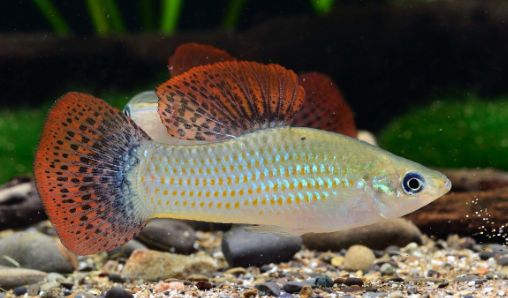
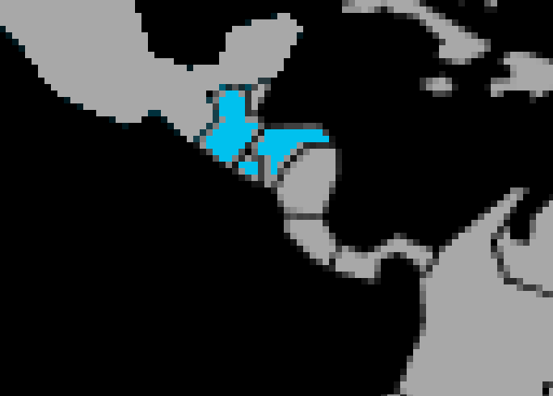

Systématique
- Ordre : Cyprinodontiformes
- Famille : Poeciliidae
- Genre : Poecilia
- Espèce : Poecilia salvatoris

Poecilia salvatoris, souvent appelé molly de la liberté ou liberty molly, est un vivipare d’Amérique centrale dont les adultes mesurent en général 6 à 8 cm, avec des mâles légèrement plus petits que les femelles.
Le corps est trapu, argenté à gris, orné de nageoires dorsale et caudale présentant des bandes rouge‑orangé et bleuâtres très vives chez les mâles dominants, ce qui en fait un molly particulièrement coloré.
L’espèce vit en petits groupes proches de la surface et du milieu de la colonne d’eau, dans des rivières et canaux à courant faible ou modéré; c’est un poisson vif, constamment en mouvement.
Les mâles établissent une hiérarchie et peuvent se montrer assez bagarreurs entre eux, surtout en petit volume; le dominant arbore généralement des couleurs plus contrastées que les autres mâles.
Avec les autres espèces, Poecilia salvatoris est plutôt tolérant, mais son tempérament dynamique et parfois un peu nerveux demande des colocataires robustes et de taille comparable, dans un bac spacieux.
Mode : ovovivipare; comme les autres Poecilia, le mâle féconde la femelle grâce à un gonopode, puis celle‑ci “met bas” des alevins entièrement formés qui se dispersent aussitôt.
La gestation dure environ 4 semaines selon la température, et une femelle peut produire des portées de plusieurs dizaines de jeunes, avec un renouvellement régulier de la population en aquarium.
Les adultes ne prodiguent aucun soin parental et peuvent consommer une partie des alevins; un décor bien planté, avec de nombreuses cachettes et des zones de végétation fine, augmente nettement le taux de survie des jeunes.
Dimorphisme sexuel : le mâle est plus coloré, avec un gonopode et des nageoires dorsale et caudale plus développées et vivement pigmentées; la femelle est plus grande, plus massive, au ventre arrondi, avec une nageoire anale triangulaire classique.
Espérance de vie : en aquarium, le molly de la liberté vit en moyenne 3 à 5 ans si la qualité de l’eau reste stable et si le bac offre suffisamment d’espace et de cachettes pour limiter le stress social.
Dans la nature, Poecilia salvatoris occupe divers milieux d’eau douce en Amérique centrale: rivières lentes, affluents, canaux et étangs, souvent dans des zones peu profondes proches des berges, riches en végétation aquatique et palustre.
Le substrat est généralement sableux ou graveleux, avec des zones de feuilles mortes et de racines; la colonne d’eau est bien oxygénée, mais le courant reste modéré, créant des secteurs calmes où les poissons peuvent se reposer et se reproduire.
Répartition

Origine naturelle :
- Bassins versants atlantiques et pacifiques d’Amérique centrale, principalement au Salvador, au Guatemala, au Honduras et au Nicaragua.
L’espèce est considérée comme localement menacée dans certaines parties de son aire d’origine mais a également été introduite ponctuellement ailleurs, ce qui justifie de ne pas la relâcher dans la nature hors de sa distribution naturelle.
Paramètres de maintenance
Température : 25 à 28 °C.
pH : environ 7,0 à 7,5, de neutre à légèrement alcalin.
GH : 10 à 15 °dGH, l’espèce se portant mieux en eau modérément dure.
Courant : lent à modéré, avec une bonne oxygénation mais sans remous violents, sur un décor très planté offrant de multiples refuges.
Volume conseillé : au minimum 250 à 300 L pour un groupe, avec une façade d’au moins 120 à 150 cm, car ce sont de bons nageurs et les mâles ont besoin d’espace pour établir leur hiérarchie sans harceler en permanence les femelles.
Régime alimentaire
Régime : omnivore à dominante carnivore; dans le milieu naturel, Poecilia salvatoris consomme principalement des insectes, larves, petits invertébrés aquatiques et, en complément, des algues et débris végétaux.
En aquarium, il accepte facilement les paillettes et granulés pour vivipares, mais doit recevoir régulièrement des proies vivantes ou congelées (artémias, daphnies, larves de moustiques) pour exprimer pleinement ses couleurs et son comportement.
L’ajout de végétaux (spiruline, légumes pochés comme courgette ou épinard) contribue à couvrir ses besoins en fibres et en pigments, tout en limitant les risques de surpoids et de troubles digestifs liés aux nourritures trop grasses.